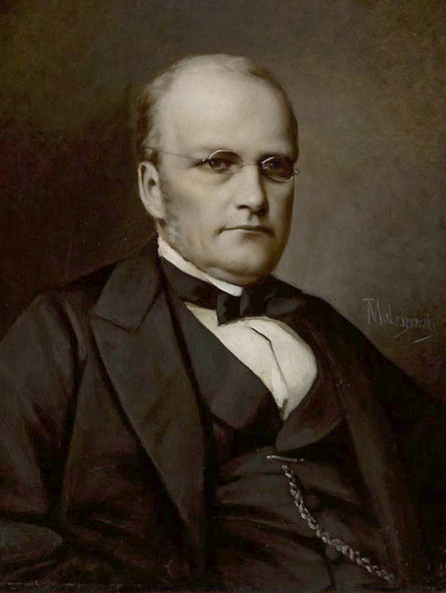

Stanisław Moniuszko
Staniław Moniuszko to urodzony 5 maja 1819 roku niedaleko Mińska kompozytor, dyrygent oper i orkiestr symfonicznych, a także pedagog i organista. Nazywany ojcem polskiej opery narodowej, jeden z najwybitniejszych kompozytorów epoki romantyzmu w Polsce. Muzyki uczył się początkowo w Warszawie, u Augusta Freyera, a następnie w Mińsku pod okiem Dominika Stefanowicza. Uczył się jeszcze Berlinie, gdzie jego edukacją zajmował Carl Friedrich. Następnie działal jako organista, kompozytor, pedagog, oraz wykładowca. Zmarł 4 czerwca 1872 roku w Warszawie.
Fryderyk Chopin

Fryderyk Chopin urodził się 22 lutego lub pierwszego marca w Żelazowej Woli. Podobnie, jak Stanisław Moniuszko, był jednym z najwybitniejszych polskich kompozytorów romantyzmu, znanym na całym świecie. Niedługo po narodzeniu jego rodzina przeniosła się do Warszawy. Naukę gry na fortepianie zaczął w wieku około 4-5 lat, u swojej matki. Następnie uczył go Wojciech Żywny. Fryderyk zaczął komponować zanim skończył 7 lat. Był jednym z najsłynniejszych pianistów. Od 1831 mieszkał we Francji. Zmarł 17 października 1849 w Paryżu.